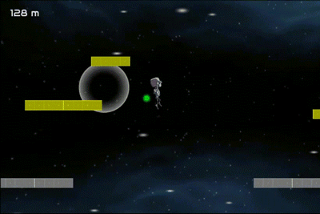
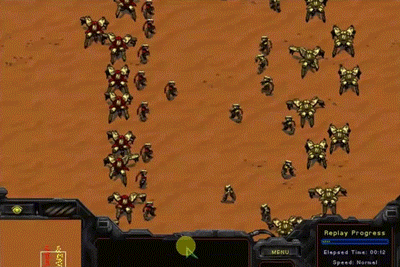
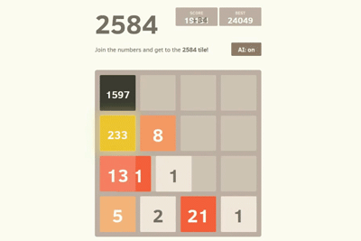
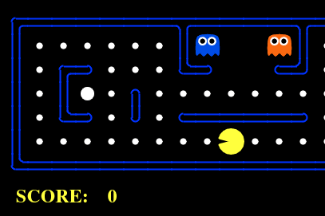

Games

Through Galaxies
Shoot'em-up, Arcade, Bullet-hell, Vertical-scroller 2016

Robot Escaper
Infinite-runner, Action, Horizontal-scroller Unity Web Player 2014AI

MCTS Gladiator
A StarCraft bot applied Monte-Carlo tree search for tactical decision-making. 2016

Fib2584 AI
An AI plays Fib2584, a variation of the well-known game 2048, with temporal difference learning. 2014
